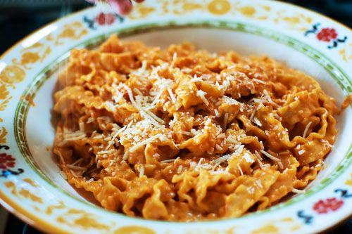

Pasta alla Vodka

Description
How can I adequately describe to you my love for this tomato-cream-based dish? I’m a raging tomato-cream-sauce fiend anyway, but this one … there’s just something about it. It’s mild, and each bite has a really clean finish, a perfect ending.
Ingredients
- 1 lb. pasta
- 2 Tbsp. olive oil
- 2 Tbsp. butter
- 1 whole medium onion, chopped finely
- 2 cloves garlic, chopped
- 3/4 cup vodka
- 1 can tomato puree
- 1 cup heavy cream
- 1 pinch red pepper flakes
- 1/4 tsp. salt
- Freshly ground black pepper, to taste
- 1 cup grated parmesan cheese
Steps
- Cook pasta according to package directions, being careful not to overcook.
- In a large skillet over medium heat, add olive oil and butter. When butter is melted, add in chopped onion and garlic. Stir and allow to cook for two minutes. Pour in vodka. Stir and cook for three minutes. Add in tomato puree and stir.
- Reduce heat to low and stir in cream. Allow to simmer, being careful not to overheat. Stir in red pepper flakes, salt and pepper.
- Drain the pasta, reserving 1 cup of pasta water in case sauce is too thick. Add cooked pasta to the sauce, tossing to combine. Splash in a little water if it needs it. Stir in Parmesan cheese.
- Pour mixture into large serving bowl. Garnish with more Parmesan cheese.
- Eat it out of the serving bowl. Faint. Repeat as needed.